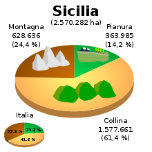
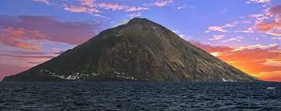
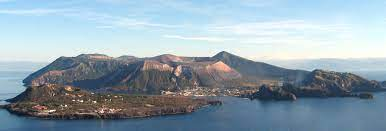
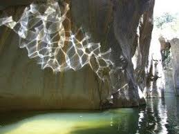

La geografia
La Sicilia è l'isola più grande del Mar Mediterraneo e la settima in Europa (EU). A nord si affaccia sul mar Tirreno, a est è divisa dalla penisola italiana dallo stretto di Messina ed è bagnata dal mar Ionio e a sud-ovest è divisa dall'Africa.
Un fenomeno geologico peculiare è il vulcanesimo sedimentario delle Macalube di Aragona, nel libero consorzio comunale di Agrigento. Questo raro fenomeno ha creato la cosiddetta collina dei Vulcanelli, un'area brulla, di colore dal biancastro al grigio scuro, popolata da una serie di vulcanelli di fango, alti intorno al metro. Il fenomeno è legato alla presenza di terreni argillosi poco consistenti, intercalati da livelli di acqua salmastra, che sovrastano bolle di gas metano sottoposto a una certa pressione. Il gas, attraverso discontinuità del terreno, affiora in superficie, trascinando con sé sedimenti argillosi ed acqua, che danno luogo ad un cono di fango, la cui sommità è del tutto simile ad un cratere vulcanico. Il fenomeno assume talora carattere esplosivo, con espulsione di materiale argilloso misto a gas ed acqua scagliato a notevole altezza.
Morfologia
Il territorio della Sicilia comprende anche diverse isole e arcipelaghi, quali l'arcipelago delle sette isole Eolie e Ustica a nord, e quello delle tre Isole Egadi ad ovest nonché, a sud, Pantelleria, e le Isole Pelagie. Poi vi sono altre isole minori, come le isole dello Stagnone. Le isole Pelagie sono geograficamente legate al continente africano (in particolare Lampedusa e Lampione), ma amministrativamente fanno parte del libero consorzio comunale di Agrigento. Infine, da un punto di vista geografico e storico costituiscono parte integrante dell'arcipelago siciliano anche Malta e le altre isole maltesi.
Orografia
È una regione prevalentemente collinare (per il 62% del territorio), mentre per il 24% è montuosa e per il restante 14% è pianeggiante (le pianure più grandi sono la piana di Catania e la piana di Gela). Il rilievo è vario: nella Sicilia settentrionale si articola nei monti Peloritani, Nebrodi e Madonie, che formano, nel loro complesso, l'Appennino siculo[4], ideale continuazione dell'Appennino calabro, mentre i rilievi della Sicilia centrale e meridionale non sono compresi nell'Appennino e si articolano in monti Erei, gli Iblei e i Sicani.
I monti Erei si trovano al centro della Sicilia; su essi sorge, a 949 metri di altezza, la città di Enna. I monti Iblei si estendono invece nella fascia sud-orientale dell'isola, tra il libero consorzio comunale ragusano e quello siracusano. Nella Sicilia occidentale sorgono altri monti dall'altezza variabile, superiore ai 1.500 metri, come i Sicani, le cui cime più alte sono il monte Cammarata di 1.578 metri e la Rocca Busambra di 1.613 metri, e i monti di Palermo, che possono essere considerati una continuazione delle Madonie; essi circondano la Conca d'Oro, ai cui piedi si stende la città capoluogo di questa regione.
Si trova nelle Madonie la seconda vetta più alta dell'isola: il pizzo Carbonara (1979 metri). La maggiore vetta è infatti costituita dal massiccio dell'Etna (3340 metri nel 2011), un complesso sistema di vulcani estinti su cui persiste attività vulcanica ad alta quota.
A causa della sua posizione, a cavallo delle due importanti placche tettoniche, la regione e le isole circostanti sono interessate da un'intensa attività vulcanica. I vulcani siciliani più importanti sono: Etna, Stromboli e Vulcano.
Essi hanno la singolarità di appartenere a tre tipologie differenti: eruzioni di lave basaltiche intervallate a periodi di calma il primo; eruzioni continue, e fontane di lava, il secondo, le cui caratteristiche sono state prese come modello tipologico dagli scienziati del settore, che hanno coniato il termine tipo stromboliano per designare le attività similari dei vulcani terrestri; infine di tipo esplosivo o pliniano il terzo, caratterizzato da lunghi periodi di apparente calma ed eruzioni violente.
Idrografia
Fiumi e laghi
I fiumi siciliani sono tutti di portata ed estensione limitate. Quelli dei Nebrodi, delle Madonie e dei Peloritani a nord vengono chiamati fiumare, e sono a carattere torrentizio in quanto d'estate sono quasi perennemente in secca. Gli unici corsi d'acqua che raggiungono delle dimensioni apprezzabili sono il Salso o Imera Meridionale, il più lungo dell'isola, e il Simeto, quello con il bacino idrografico più ampio
Torna alla Homepage: